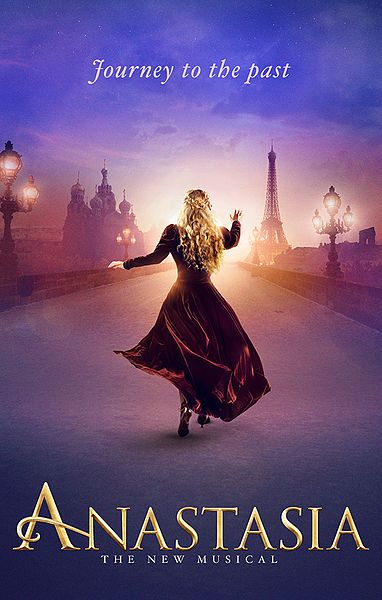

One of the most effective ways to communicate science to the general audience is through stories. Everyone loves them. In films, music, and theaters, artists have long experimented on and perfected the crafts of spreading ideas and emotions at the same time. Perhaps, we, scientists, can master such art as well.
INTRODUCING CHARACTERS

Lehman Engel, a former Broadway director, walked on a beach. He saw a dreary pelican flying, looking for fish. What a poor bird. But soon, it dived and emerged with one in its mouth. Lehman thought, "There was no doubt that I was on its side because I had met the pelican first." So, what if he was snorkeling underwater, mesmerized by a beautiful blue fish? And suddenly, the pelican struck. Oh no! • Broadway musicals like Anastasia typically present their main characters, and life goals, early in the story. The audience then decides whom to root. Their choices depend on the perspective given, which is framed by the sequence and length of introduction. How could we benefit from Lehman's inspiration? • We tell stories about nature. Explaining observations is not straightforward because there are always competing hypotheses: the null and the alternatives. These are our characters. Anyone has a chance of surviving hypothesis tests. However, the null, maybe because of its simplicity and or dreariness, often lies in the shadow of the alternatives. The lack of stage time can instill a sense of failure when all the alternatives get falsified in the end. But, what if we change our perspective at the beginning? We can satisfy the audience by making their beloved character the winner.
REFERENCES
Engel, L. 1972. Words with Music: The Broadway Musical Libretto. Schirmer Books: New York, NY.
Images by Producers of Anastasia The Musical (CC BY-SA 4.0).